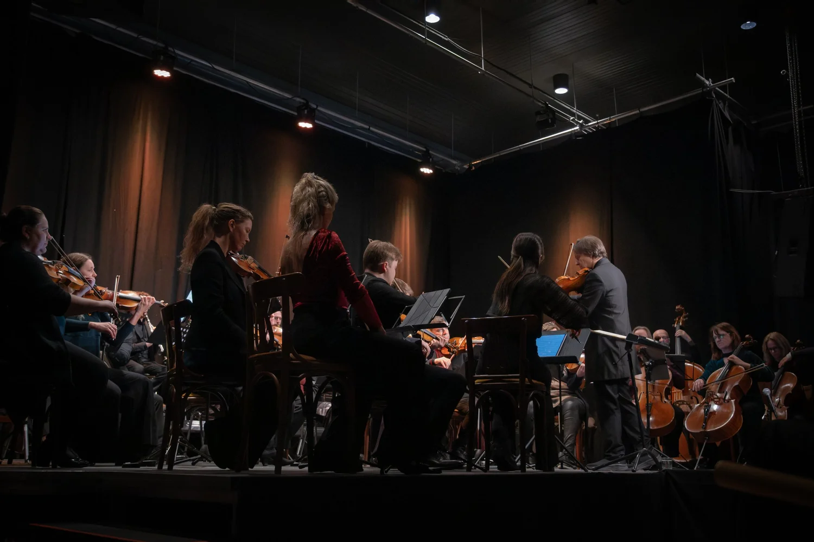
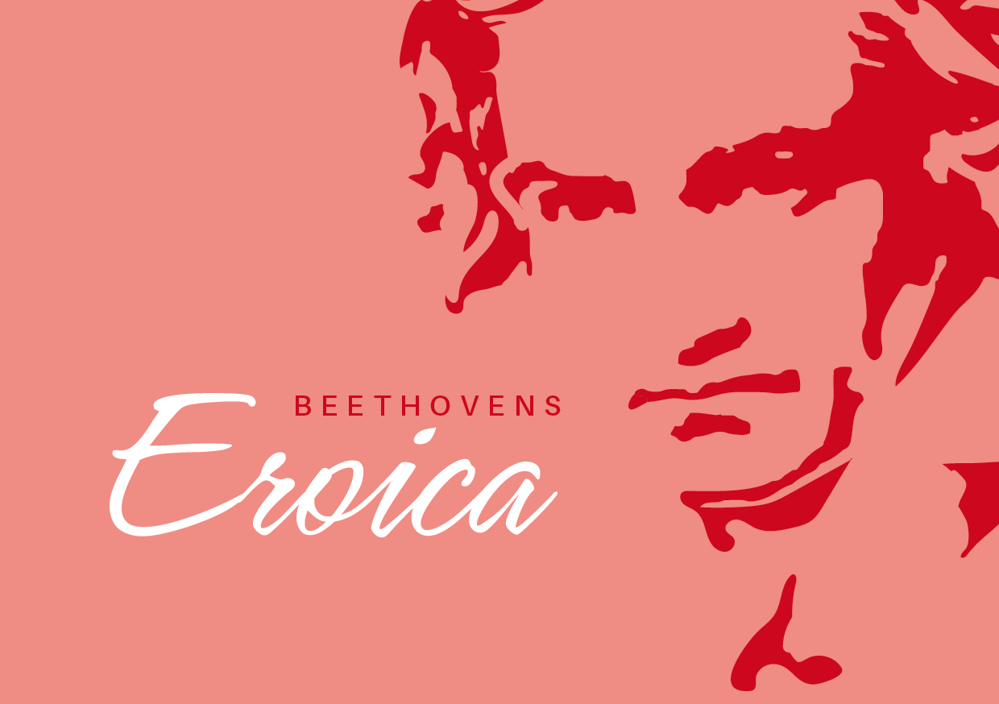
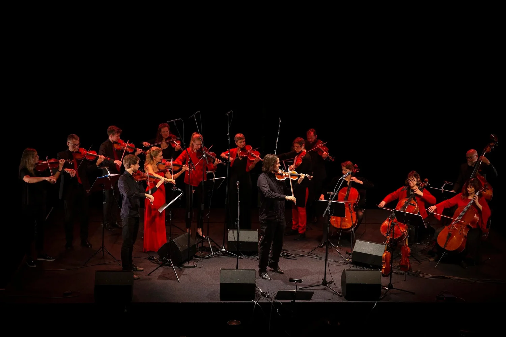
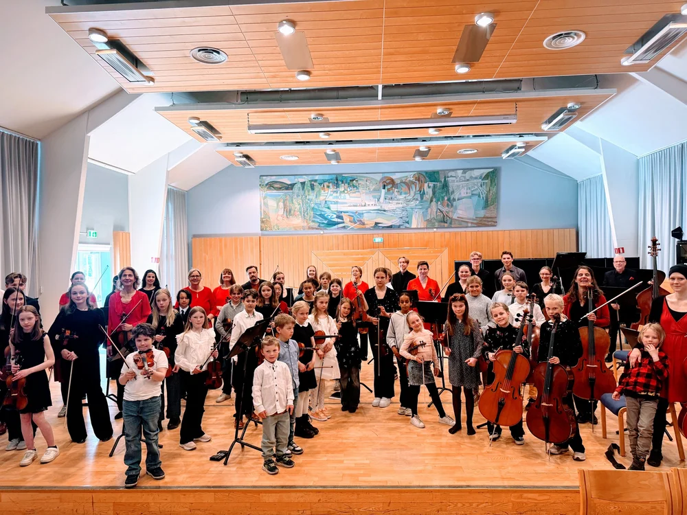
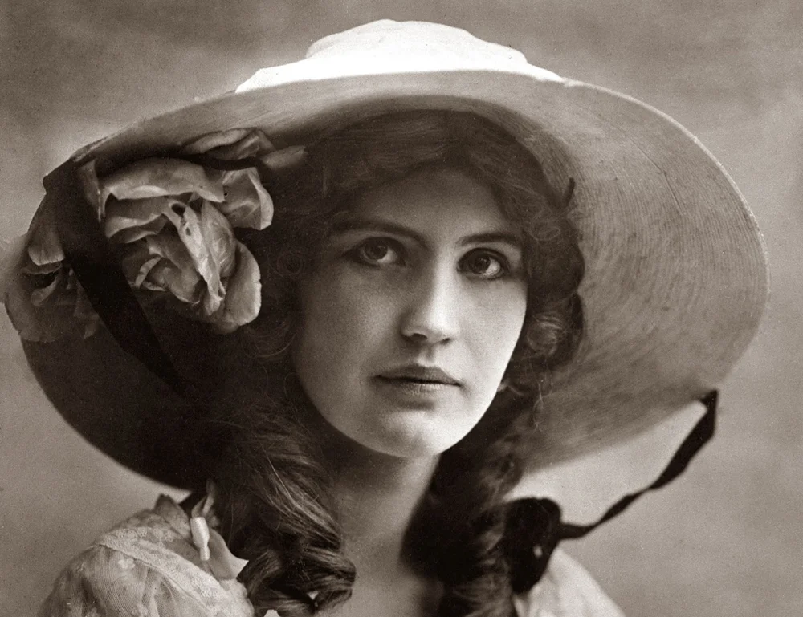

Arkiv
1991–2026
Tidligere konserter
Et utvalg av det orkesteret har spilt gjennom årene — turneer, urframføringer, innspillinger og festivaler.
Se neste konsert →
2026
18. og 19. april
To konserter
Brahms: Requiem
Hamar, Oslo
Dirigent: Mick Trommestad Melby Kor: Collegium Vocale og Meraki Kammerkor.
Solister: Hanne Marit Mordal Iversen og Magnus Ingemund KJelstad
Solister: Hanne Marit Mordal Iversen og Magnus Ingemund KJelstad

2026
4. og 5. mars
TO konserter
Beethoven: Eroica
Byscena/Gjøvik og Ringsaker kirke
Dirigent: Atle Sponberg med Nordic Winds

2019
20. januar
Konsert
Gjøvik Galla
Fjellhaven/Gjøvik
Ledelse: Atle Sponberg

2025
30. november
Julekonsert
Førjulskonsert
Gjøvik Gård / Gjøvik
Ledelse: Inrid Marie Haverstad og Bjarne Magnus Jensen Med unge strykere fra Innlandet

2025
26. oktober
konsert
Minnekonsert Kirsten Flagstad
Hamar Domkirke
Dirigent: Berit Cardas Musikere: Bjørn Kåre Odde, Ann Helen Moen, Per Arne Glorvigen
2025
Juni
Festival
Operafest Røykenvik
Røykenvik
Dirigent: Berit Cardas Musikere: Bjørn Kåre Odde, Ann Helen Moen, Per Arne Glorvigen
2025
Sesongen
16 konserter
Holbergsuiten på turné — utenat og i bevegelse
Innlandet
Framført utenat med musikerne i bevegelse, i en koreografi utviklet i samarbeid med danser og koreograf Kyrre Texnæs fra Hamar. Sesongen rommet 16 konserter med ni forskjellige program.

35 år med orkester i Innlandet
Se jubileumsprogrammet →